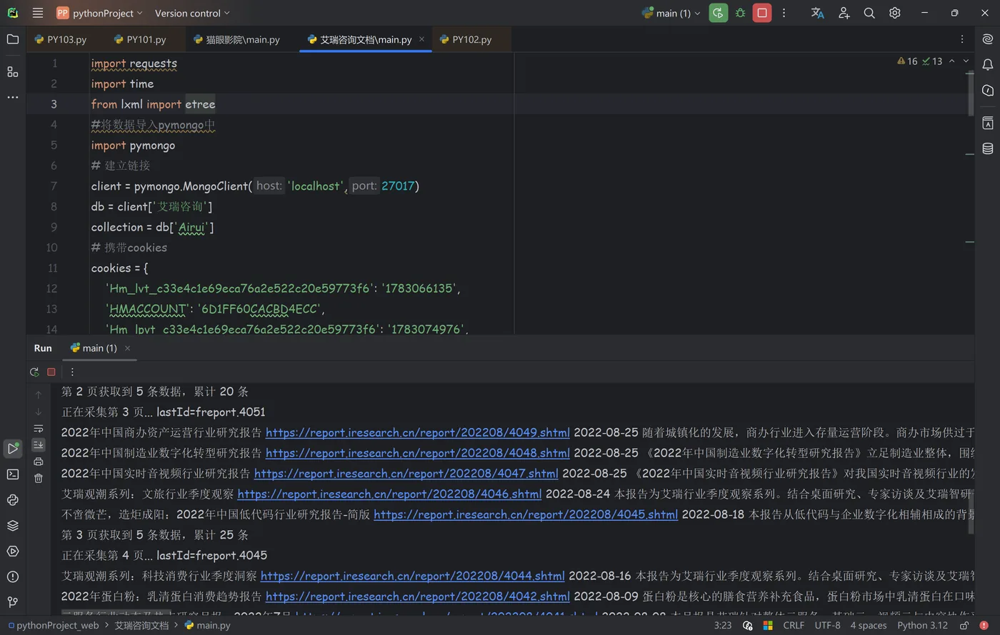
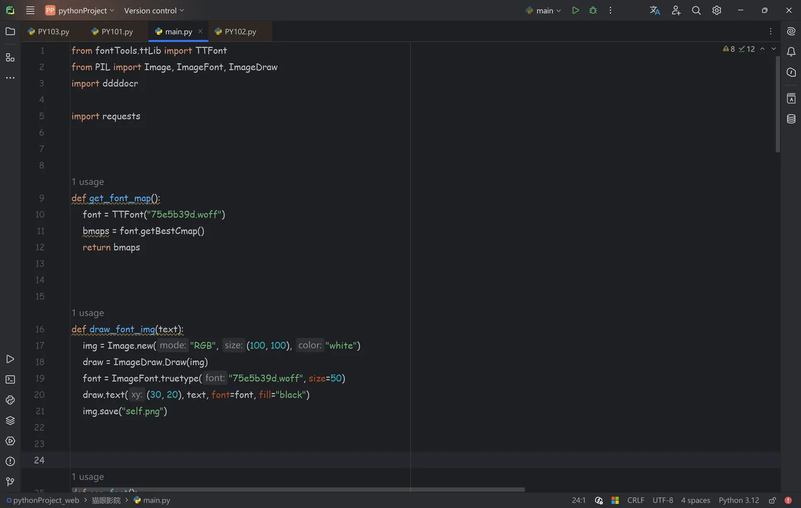
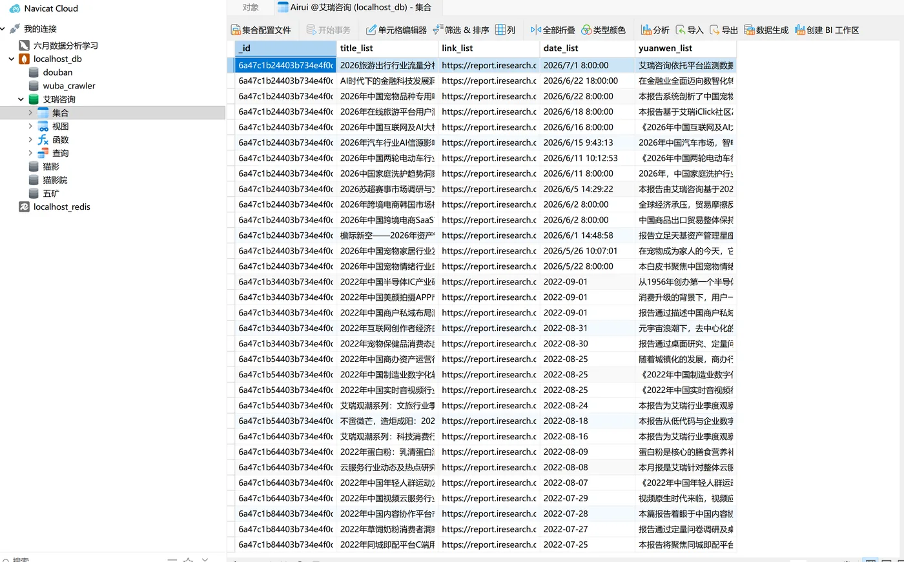

06 — 作品与证据
产品成果
技术证据
重点是碰到反爬时的处理方式：脚本不会崩溃，也不会假装成功，而是明确报告"被什么拦住了、在第几页"。一个项目能不能维护，往往就看它失败的时候说不说人话。
04-艾瑞咨询 · 代码与运行输出

左边是采集脚本，下面是真实的运行控制台——逐页翻取、lastId 游标推进、每页入库条数都在滚。
06-猫眼影院 · 字体反爬解码（源码）

get_font_map() 读出字体文件里的字符映射，draw_font_img() 把每个字符渲染成图片交给 OCR 识别——映射关系每次轮换都会打乱，所以必须现算。
不是"我解出来了"就完事，而是自己找了一组能互相验证的数据去证伪。如果不做这一步验证，很容易把 6 解成 9 还浑然不觉。
链家二手房 · 导出数据
| 标题 | 总价 | 单价 | 位置 |
|---|
| 总价低 高品质，90万入住杭城 电梯房 81方拓 | 30 万 | 3,721 元/平 | 澳海澜庭 - 富阳 |
| 价格美丽 业主诚心卖 看房方便 | 74.5 万 | 8,792 元/平 | 运旺佳苑 - 临平运河 |
| 高楼层，视野好，好房子，小区位置很不错 | 98 万 | 10,063 元/平 | 蔚宸悦城 - 青山湖科技城 |
招标信息 · JSON 结构化输出
| 招标标题 | 时间 | 机构 |
|---|
| 中国二冶武汉市红十字会医院病房设施改造升级项目 | 2026-09-20 | 公开招标/工程/中国二冶集团 |
| 十七冶路桥分公司广州埔联项目 ALC 混凝土板采购 | 2026-09-20 | 公开招标/物资/中国十七冶集团 |
输出的是能直接用的结构化数据，不是一堆原始 HTML。
数据入库实况 · 数据库客户端

数据库客户端里的实况，不是示意图。左侧是为不同目标建的库，右侧是艾瑞咨询库的实际记录——标题、原文链接、发布时间、正文，字段齐全。
豆瓣 Top250 的采集结果——排名、标题、导演、演员、年份、评分、评价人数、评分等级，完整 250 条。中文名和英文名分开存，方便后续按演员或年份做筛选分析。
学习产出
43 篇自学笔记
- 爬虫 29 篇 + 数据分析 14 篇，全部是学习过程中自己整理的，不是抄的
- 覆盖：requests → 代理池 → Cookie → 数据提取 → JS 逆向 → Playwright → Scrapy → 分布式
- 数据分析：NumPy → Pandas 清洗 → Matplotlib → Pyecharts
7 个采集项目的完整代码
- 每个项目都带 README：目标是什么、用了什么技术、怎么跑起来、踩过哪些坑
- 连探索过程中的中间版本都保留在 history/ 目录里
- 一个方案是怎么一步步试出来的，这个过程本身也有价值